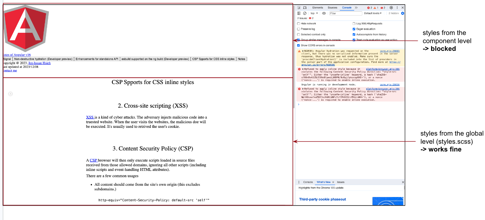

1. Cross-site scripting (XSS)
XSS
is a kind of cyber attacks. The adversary injects malicious code into a truested website.
When the user visits the websites, the malicious doe will be executed. It's usually used to retrived the user's cookie.
2. Content Security Policy (CSP)
A
CSP
browser will then only execute scripts loaded in source files received from those allowed domains, ignoring all other scripts (including inline scripts and event-handling HTML attributes).
There are a few common usages
-
All content should come from the site's own origin (this excludes subdomains.)
-
Allow users of a web application to include images from any origin in their own content, but to restrict audio or video media to trusted providers, and all scripts only to a specific server that hosts trusted code.
3. ngCspNonce
For the CSS style sheet, we could use the following rule to only allow the source of the link should be the same site. It will also block the inline stylesheet
After applying the CSP, the component level styles will be blocked.

In Angular v16, we could use ngCspNonce to allow the component-level styles (inline styles).
-
Update the header from the index.html with the following lines
-
Update the app-root from the index.html with the following lines
And the page will bee back.